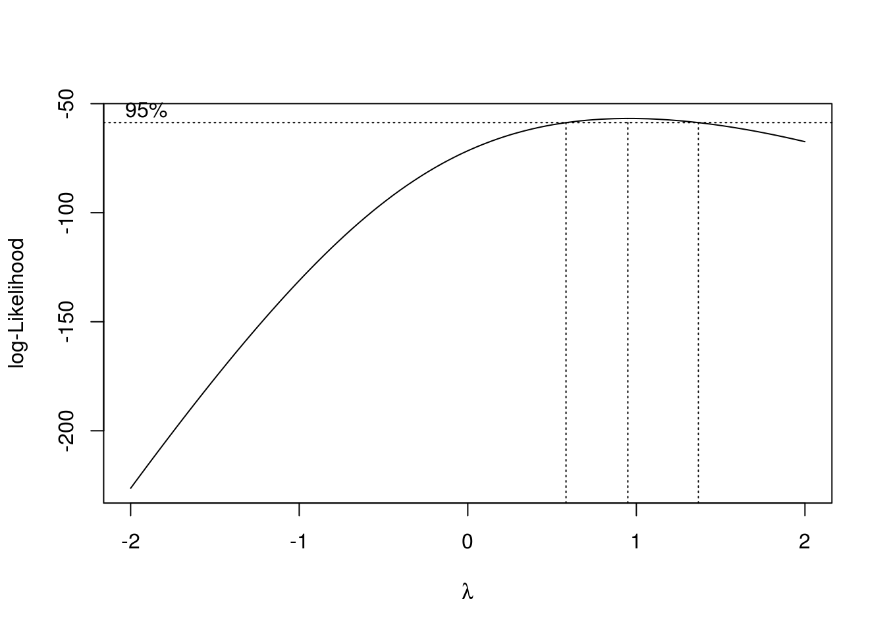
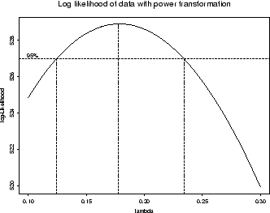

# install.packages("multcompView") # solo una vez y no hace falta cargarlo
pacman::p_load(
tidyverse,
skimr, # exploracion numerica de los datos
performance, # evaluar performance de los modelos
emmeans, # medias estimadas por el modelo
multcomp # comparar las medias entre si - tukey
)8 Anova
8.1 Un solo factor
Experimento DCA: dataset PlantGrowth
PlantGrowth {datasets}: Results from an experiment to compare yields (as measured by dried weight of plants) obtained under a control and two different treatment conditions.
pg <- PlantGrowth # simplificamos el nombre del dataset
pg- Exploración numérica
str(pg) # tipo de variablespg %>%
group_by(group) %>%
skimr::skim() # exploración numérica- Exploración visual
pg %>%
ggplot()+
aes(x=group, y=weight) +
geom_boxplot(width=0.2)+
geom_jitter(alpha=0.2, width=0.2)- Ajuste del modelo lineal
mod1 <- lm(weight ~ group, data = pg) \[y_{ij} = \mu + \alpha_i + e_{ij}; \:\:i = 1,..., k; \:j = 1,..., n\] \[N \sim (\sigma^2, 0)\]
Diagnósticos
¿Las varianzas (entre niveles del factor) son homogéneas?
check_heteroscedasticity(mod1) %>% plot- ¿Los residuos se distribuyen normales?
check_normality(mod1)
check_normality(mod1) %>% plot- Estadísticas
anova(mod1)# caso balanceado
summary(mod1)
# car::Anova(mod1)# caso desbalanceado- Estimación de medias y error estándar de cada trat
Paquete emmeans
em <- emmeans(mod1, ~ group, type="response")
em # %>% knitr::kable()
class(em)- Comparaciones múltiples
Test de Tukey
res <- cld(em,
Letters = letters,
reverse = TRUE,
alpha = .05)
res- Gráfico final
plot(em, col="grey30") +
theme_bw()res %>%
ggplot() +
aes(x=group, y=emmean)+
geom_pointrange(aes(ymin = lower.CL, ymax = upper.CL))+
labs(x = "Tratamiento", y = "Peso (g)")+
# Letras de Tukey
geom_text(aes(label = str_squish(.group)),
angle=90, vjust=-1)+
# Observaciones originales
geom_jitter(data = pg, width = .1, alpha=.5,
aes(y=weight)) +
theme_bw()Comparación de medias de los trat vs testigo (Dunnet)
contrast(em, "trt.vs.ctrl1")8.2 Dos factores
festuca <- rio::import("https://raw.githubusercontent.com/juanchiem/agro_data/master/festuca.csv") %>%
mutate_if(is.character, as.factor)- Exploracion {-}
xtabs(~ ph+Calluna, festuca)festuca %>% skim()dodge <- position_dodge(width=0.5)
festuca %>%
ggplot() +
aes(x = ph, y = weight, col = Calluna) +
geom_boxplot(position = dodge, width=.4) +
geom_point(position=position_jitterdodge(dodge.width=0.5),
width=.05)- Ajuste {-}
fit1 <- lm(weight ~ ph * Calluna, data = festuca)- Diagnósticos {-}
¿Las varianzas (entre niveles del factor) son homogéneas?
check_heteroscedasticity(fit1) # %>% plotPara estabilizar las varianzas una opción puede ser la transformación de Potencia óptima de Box-Cox
Note
Transformación potencia óptima de boxcox
Esta transformación sólo tiene un parámetro: lambda, graficado en el eje x, al cual deberiamos elevar nuestra variable respuesta para estabilizar varianzas.
Si el intervalo de confianza (líneas punteadas verticales) del valor máximo contiene al 1, no deberíamos transformar la variable respuesta:

Si el valor de lambda es igual a cero, se lleva a cabo la transformación con el logaritmo natural

…Si el intervalo no contiene a 0 ni a 1, hay que transformar la variable elevando a la potencia del valor de lamba incluido en el intervalo.

Noten que si nuestros datos contienen 0´s, el LN nos daria errores, en esos casos es adicionada una constante a la variable original (0.5, por ej.).
lm(log(y+0.5) ~ trt ...)boxcox(fit1)Se sugiere transformacion
logya que el lambda optimo contiene al 0
- Reajuste de modelo
…con variable respuesta transformada
fit2 <- lm(log(weight) ~ Calluna * ph, data = festuca)Nuevamente se diagnostica la estabilización de las varianzas
check_heteroscedasticity(fit2)¿Los residuos se distribuyen normales?
check_normality(fit2) # %>% plotAhora si, podríamos avanzar con nuestro modelo.
- Estadísticas del modelo
anova(fit2)- Medias y SE estimados por el modelo
fest_em <- emmeans(fit2, ~ Calluna | ph, type = "response")
fest_em- Comparaciones múltiples
res_festuca <- cld(fest_em, alpha=.05, Letters=letters)
res_festuca- Gráfico final
res_festuca %>%
ggplot() +
aes(x=ph, y=response, col=Calluna)+
geom_pointrange(aes(ymin = lower.CL, ymax = upper.CL),
position = dodge)+
labs(x = "", y = "Weight (g)")+
geom_text(vjust=-1, angle=90,
aes(label = str_squish(.group)), position = dodge)+
# geom_jitter(data = festuca, alpha=0.2, position = position_dodge(width=0.5)) +
theme_bw()- Recursos
Analysis and Interpretation of Interactions in Agricultural Research
Analysis of Combined Experiments Revisited
A brief introduction to mixed effects modelling and multi-model inference in ecology